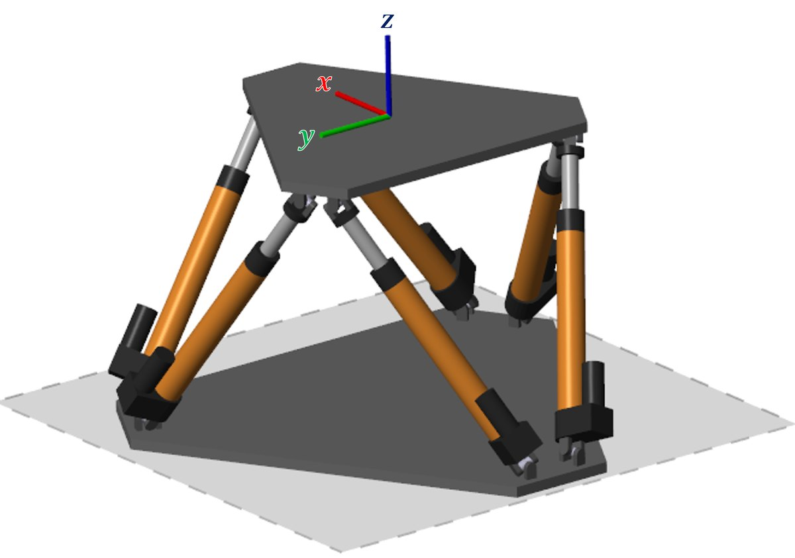

Learning-Based Motion Cueing for a Six-DOF Stewart Platform
27th National Automatic Control Conference (TOK 2026), Ankara, Türkiye, 8–10 October 2026 (in Turkish). Conference Paper

Abstract
This study proposes a neural network-based Motion Cueing Algorithm for a six-DOF Stewart platform to maximize workspace utilization and generate accurate motion cues. Traditional algorithms ignore kinematics and actuator constraints, forcing conservative tuning that limits performance. Model Predictive (MP) algorithms imperfectly obey constraints while utilizing the full workspace, but their computational cost prevents real-time application. We introduce a Long Short-Term Memory (LSTM) network trained via behavioral cloning of MP trajectories. By integrating a physics-informed loss function, the network explicitly accounts for inverse kinematics and coupling effects. Results demonstrate that while the neural method does not guarantee physical bounds, it substantially restricts actuator stroke violations over classical baselines, with axis exceedances confined to brief spikes. The LSTM executes in real time, outperforming traditional algorithms in directional accuracy, false-cue mitigation, and stroke containment, although it exhibits higher high-frequency errors due to preview-free tilt dynamics.